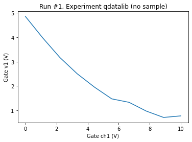

Example on how to import files using QDataLib¶
[1]:
from qdatalib.tolib import Qdatalib
from qcodes.dataset.plotting import plot_dataset
Instantiate Qdatalib¶
To use Qdatalib you need an instance. If you have not setup Qdatalib yet see the example: setting_up_qdatalib
[2]:
qdatalib = Qdatalib()
Access your data using Qdatalib¶
You can get data from Qdatalib using the funcion get_data_by_catalog.
[3]:
data = qdatalib.get_data_by_catalog({'run_id':1})
The query returend 2 results
[ { 'C:\\Users\\rbcma\\AppData\\Local\\Temp\\qdatalib_local': { 'db': 'original_path'},
'Presented': 'group meeting June 24, 2021',
'_id': 'aaaaaaaa-0000-0000-0000-017aa9641e21',
'exp_id': 1,
'exp_name': 'qdatalib',
'file': 'shared_tutorial.db',
'my_Score': 2,
'my_field': 'Group NB',
'note': ['This happened'],
'parameters': [['dac_ch1', 'V'], ['dmm_v1', 'V'], ['dmm_v2', 'V']],
'run_id': 1,
'run_time': '2021-07-15 10:59:08',
'sample_name': 'no sample',
'scientist': 'John doe',
'tag': ['double dot']},
{ 'C:\\Users\\rbcma\\AppData\\Local\\Temp\\qdatalib_localB': { 'db': 'original_path'},
'Presented': 'group meeting July 24, 2021',
'_id': 'aaaaaaaa-0000-0000-0000-017aa96473d6',
'exp_id': 1,
'exp_name': 'qdatalibB',
'file': 'shared_tutorial.db',
'my_Score': 10,
'my_field': 'Group C',
'note': ['This happened again'],
'parameters': [['dac_ch1', 'V'], ['dmm_v1', 'V'], ['dmm_v2', 'V']],
'run_id': 1,
'run_time': '2021-07-15 10:59:30',
'sample_name': 'no sampleB',
'scientist': 'Jane doe',
'tag': ['sigle dot']}]
If more than one data set matches your query criteria, only the mongo collection data are returned. You can use the returned information to make a query that gives you the data you want.
[5]:
data = qdatalib.get_data_by_catalog({'run_id':1,'tag':'double dot'})
[6]:
plot_dataset(data)
[6]:
([<AxesSubplot:title={'center':'Run #1, Experiment qdatalib (no sample)'}, xlabel='Gate ch1 (V)', ylabel='Gate v1 (V)'>,
<AxesSubplot:title={'center':'Run #1, Experiment qdatalib (no sample)'}, xlabel='Gate ch1 (V)', ylabel='Gate v2 (mV)'>],
[None, None])

Getting data from a netcdf is returned as a xarray
[7]:
data_xarray = qdatalib.get_data_from_nc_by_catalog({'run_id':1,'my_field': 'Group NB'})
[8]:
data_xarray
[8]:
<xarray.Dataset>
Dimensions: (dac_ch1: 10)
Coordinates:
* dac_ch1 (dac_ch1) float64 0.0 1.111 2.222 3.333 ... 6.667 7.778 8.889 10.0
Data variables:
dmm_v1 (dac_ch1) float64 4.856 3.978 3.168 2.504 ... 0.9716 0.7113 0.7752
dmm_v2 (dac_ch1) float64 0.7592 -5.235e-05 ... 0.0006781 -0.000473
Attributes: (12/13)
ds_name: results
sample_name: no sample
exp_name: qdatalib
snapshot: null
guid: aaaaaaaa-0000-0000-0000-017aa9641e21
run_timestamp: 2021-07-15 10:59:08
... ...
captured_run_id: 1
captured_counter: 1
run_id: 1
run_description: {"version": 3, "interdependencies": {"paramspec...
run_timestamp_raw: 1626339548.7205129
completed_timestamp_raw: 1626339548.8823342xarray.Dataset
- dac_ch1: 10
- dac_ch1(dac_ch1)float640.0 1.111 2.222 ... 8.889 10.0
- name :
- dac_ch1
- paramtype :
- numeric
- label :
- Gate ch1
- unit :
- V
- inferred_from :
- []
- depends_on :
- []
array([ 0. , 1.111111, 2.222222, 3.333333, 4.444444, 5.555556, 6.666667, 7.777778, 8.888889, 10. ])
- dmm_v1(dac_ch1)float64...
- name :
- dmm_v1
- paramtype :
- numeric
- label :
- Gate v1
- unit :
- V
- inferred_from :
- []
- depends_on :
- dac_ch1
array([4.855916, 3.978291, 3.167727, 2.503683, 1.954306, 1.473822, 1.332216, 0.971628, 0.711277, 0.775152]) - dmm_v2(dac_ch1)float64...
- name :
- dmm_v2
- paramtype :
- numeric
- label :
- Gate v2
- unit :
- V
- inferred_from :
- []
- depends_on :
- dac_ch1
array([ 7.592161e-01, -5.235340e-05, -7.234900e-06, 8.302668e-04, -1.245735e-03, -4.155454e-04, -7.960841e-04, -3.306797e-04, 6.781011e-04, -4.729548e-04])
- ds_name :
- results
- sample_name :
- no sample
- exp_name :
- qdatalib
- snapshot :
- null
- guid :
- aaaaaaaa-0000-0000-0000-017aa9641e21
- run_timestamp :
- 2021-07-15 10:59:08
- completed_timestamp :
- 2021-07-15 10:59:08
- captured_run_id :
- 1
- captured_counter :
- 1
- run_id :
- 1
- run_description :
- {"version": 3, "interdependencies": {"paramspecs": [{"name": "dac_ch1", "paramtype": "numeric", "label": "Gate ch1", "unit": "V", "inferred_from": [], "depends_on": []}, {"name": "dmm_v1", "paramtype": "numeric", "label": "Gate v1", "unit": "V", "inferred_from": [], "depends_on": ["dac_ch1"]}, {"name": "dmm_v2", "paramtype": "numeric", "label": "Gate v2", "unit": "V", "inferred_from": [], "depends_on": ["dac_ch1"]}]}, "interdependencies_": {"parameters": {"dmm_v1": {"name": "dmm_v1", "paramtype": "numeric", "label": "Gate v1", "unit": "V"}, "dac_ch1": {"name": "dac_ch1", "paramtype": "numeric", "label": "Gate ch1", "unit": "V"}, "dmm_v2": {"name": "dmm_v2", "paramtype": "numeric", "label": "Gate v2", "unit": "V"}}, "dependencies": {"dmm_v1": ["dac_ch1"], "dmm_v2": ["dac_ch1"]}, "inferences": {}, "standalones": []}, "shapes": {"dmm_v1": [10], "dmm_v2": [10]}}
- run_timestamp_raw :
- 1626339548.7205129
- completed_timestamp_raw :
- 1626339548.8823342
[9]:
data_xarray.dmm_v1.plot()
[9]:
[<matplotlib.lines.Line2D at 0x19f595b5708>]
Getting data from a csv file is returned as a pandas dataframe
[13]:
data_df = qdatalib.get_data_from_csv_by_catalog({'run_id':1,'tag':'sigle dot'})
[15]:
data_df
[15]:
| dac_ch1 | dmm_v1 | dmm_v2 | |
|---|---|---|---|
| 0 | 0.000000 | 5.040760 | 0.759494 |
| 1 | 1.111111 | 4.033489 | 0.000178 |
| 2 | 2.222222 | 3.158298 | -0.000819 |
| 3 | 3.333333 | 2.493970 | -0.000011 |
| 4 | 4.444444 | 2.117269 | -0.000218 |
| 5 | 5.555556 | 1.697006 | -0.000441 |
| 6 | 6.666667 | 1.440228 | -0.000125 |
| 7 | 7.777778 | 0.811189 | -0.000124 |
| 8 | 8.888889 | 0.909516 | -0.000595 |
| 9 | 10.000000 | 0.698422 | 0.000352 |
[21]:
data_df.plot(x='dac_ch1',y='dmm_v2')
[21]:
<AxesSubplot:xlabel='dac_ch1'>
[ ]: